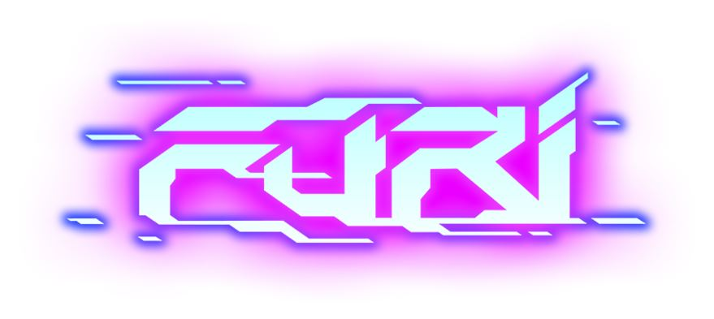
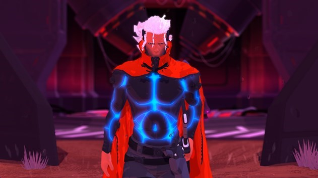
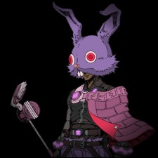

Furi is an action shoot’em up game made by the Game Bakers. The actual game is made up series of ten different boss fights. Unlike most modern day action games there’s no unlockable attacks or combos(altough you can argue the final fight does give you a differnet set of moves). You are equipped with a pistol and sword both of which can be charged for extra damage. You’re main ways of defense is parying which gives you back health but requires good timing or dodging which is faster and safer but can take you off the offence if you are not skilled enought to follow up.
Furi is a game that dosen't give you a lot of answers in the way of story. The basics are that you are a captured neon samurai guy in a dystopian future. Your name is The Rider.
You are pretty much trapped in the universes most high security prison. A prison within a dozen of other prisons so to speak. After a while you are freed by a strange man known as The Voice.
You now have to fight through a guantlet of powerful bosses called guardians across a large varity of worlds in an attempt to reach the free world.
Furi is a top down boss battler with bullet hell and action game mechanics. Each fight is split up between short walking cycles where The Voice will tell you about who you are about to fight.Now full disclaimer here, this game is really hard. Each boss is unique in design and fighting style, all of them with a unique gimmick. It is nearly guaranteed that you will yell at the scream in either victory and triumph or absolute rage. It is also very likely that you will throw your controller. Now you may be thinking that this is an exageration, but no. I kid you not that I have spent weeks on some of the hardest bosses. Now To help you not fall into insanity I put up guides on each of the bosses that can be found on the navigation bar.